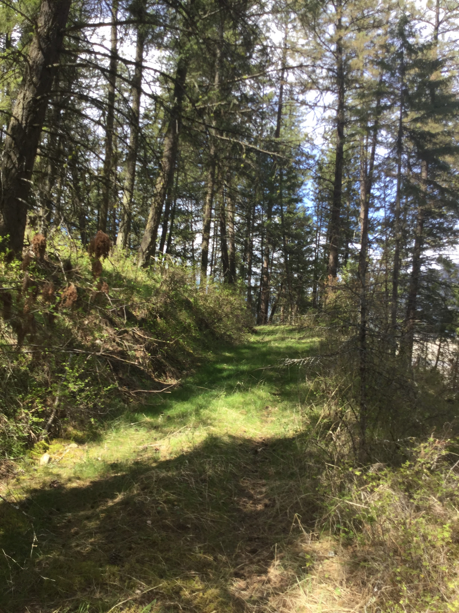

Adventures in the Tri-County area
Welcome
Hi, and welcome to Adventures in the Tri-County area! This includes Ferry, Stevens, and Pend Orielle county in North Eastern Washington. This is where I've spent most of my life and it's a great place for all sorts of adventures. This website is geared towards summer activities so no skiing or snowshoeing and it isn't an exhaustive list of every opportunity in these areas just a couple of my favorites.
I try to showcase opportunities in all three opportunities but as I grew up nearest to the Kettle Crest this area may get a little more attention than others. My descriptions are not exhaustive either simply enough to gain interest and give you some ideas.If you are interested in other activities or have more questions about the locations I've highlighted don't be afraid to use the Contact Us form to ask any sort of questions
Whether you've been living here for years, have just moved here, or are here on vacation I hope you have an opportunity to have an Adventure in the Tri-County Area!